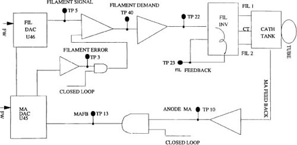
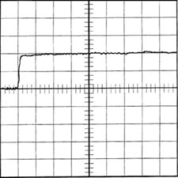
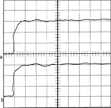
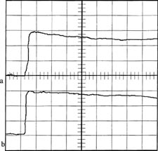

Operating Documentation
Direction 5114043-800, Rev# 9
LightSpeed 3.X Service Methods (Advanced)
Operating Documentation |
The purpose of mA Meter Verification is to ensure that the mA Measurement Electronics has a gain of one between actual tube current and reporting to the firmware. This firmware value would then be reported to the console.
The method outlined in various GEMS documents is to install an ISO compliant, calibrated ammeter across two test points. This meter effectively shorts out a 680ohm resistor. The next step is to install a 62ohm resistor from one side of the ammeter to the mA test point (TP5) on the measurement Bd.
TP5 is a voltage representation of tube current. This voltage is feed to the mA Control Bd. in the OBC and the resultant mA is fed to the firmware and can be read from a mA test point. This is where the gain of one is needed, between the Measurement Bd. TP5 and the mA Control Bd. mA Test Point.
When [ACCEPT] is touched on the console screen and after a time delay Q1 is turned on (+)15vdc (0r -15vdc) is applied through the ammeter (not the shorted out 680ohm resistor), through the 68ohm resistor to TP5. 15vdc over 62ohm comes out to 242mA, add in the other resistances in the measurement circuit an it comes out to be about 140mA to 200mA.
It really doesn’t matter what the actual mA is, all that matters is that the console reading (firmware value from the mA Test Points) MATCHES what the ISO compliant, calibrated ammeter says.
mA/Filament Control Bd. Schematics 2154834SCH
OBC Backplane list
Gantry Rotating Member Block Diagram
Gantry_Rotating_Interconnect
X-Ray Tube 120 VAC
Multi-meter
Oscilloscope
| Cathode mA: | 193.7mA | 200.0mA | 193.7mA |
This value comes from the mA Control Bd. 2154834 TP4, through the backplane and Gentry I/O bd. Since the cathode is in series with the anode, TP4 should be the same value as the TP10 (anode mA, they are in series). The scale is 1v/100mA.
In closed loop mode TP4 should be commanded mA. In open loop mode the value should be less (whatever is in GenCalSeed). TP4 is actually the cathode high voltage tank secondary amperage, the x-ray tube is the load for the secondary. mA Meter Verification verifies that the measurement electronics have a gain of one and that reported mA is actual mA.
Cathode high voltage tank secondary amperage (and x-ray tube mA) is the direct result of filament heating, for improper mA include filament function while troubleshooting. If mA is out of tolerance (3%), check kV values for large errors, verify mA metering, and run the Filament Functional test. BLDs can help also.
If cathode and anode mA are different, suspect mA measurement electronics (use mA Meter Test), or suspect a shattered x-ray tube insert shorting out the filament (cathode) or the anode.
| Anode mA: | 193.7mA | 200.0mA | 193.7mA |
This value comes from the mA Control Bd. 2154834 TP10, through the backplane and Gentry I/O bd. Since the cathode is in series with the anode, TP10 should be the same value as the TP4 (cathode mA, they are in series). The scale is 1v/100mA.
In closed loop mode TP10 should be commanded mA. In open loop mode the value should be less (whatever is in GenCalSeed). TP10 is actually the anode high voltage tank secondary amperage, the x-ray tube is the load for the secondary. mA Meter Verification verifies that the measurement electronics have a gain of one and that reported mA is actual mA.
Anode high voltage tank secondary amperage (and x-ray tube mA) is the direct result of filament heating, for improper mA include filament function while troubleshooting. If mA is out of tolerance (3%), check kV values for large errors, verify mA metering, and run the Filament Functional test. BLDs can help also.
If cathode and anode mA are different, suspect mA measurement electronics (use mA Meter Test), or suspect a shattered x-ray tube insert shorting out the filament (cathode) or the anode.
Illustration 1: Simplified schematic

Illustration 2: Normal mA waveshape for 80kV, 100mA.

Channel A:0.5 v Board: mA Control 2154834 scope: TEK 224
Vert: 0.5v Horz:5mS TP 10 to TP 2
80KV 100mA CLOSED LOOP mA TP10 (anma) to TP2 (sgnd)
This is a picture of the mA feedback read off of the mA Control Bd, with CLOSED LOOP mA selected. There should not be a great difference between CLOSED LOOP mA and OPEN LOOP mA. IF there is, it indicates that CLOSED LOOP is trying to make up for a problem, investigate for root cause.
Anode and cathode mAs are in series. Therefore anode and cathode mA waveshapes are duplicates.
Comment: If not, either Ohm’s law has been redefined for series circuits, or there is a problem. Verify for a measurement problem first.
Illustration 3: Normal mA waveshape for 80kV, 320mA.

Channel A: 1v=5mS Board: mA control 2154834 scope:TEK 244 B:1v=5mS Vert:1v Horz:5mS.
Ch 1 (a)= 80KV 320mA CLOSED LOOP mA TP10 (ANMA) to TP2 (sgnd)
Ch 2 (b)= 80KV 320mA CLOSED LOOP mA TP4 (CAMA) to TP2 (sgnd)
This is a picture of the mA feedback read off of the mA control bd.
There should not be a great difference between CLOSED LOOP mA and Open loop mA. If there is, it indicates that CLOSED LOOP is trying to make up for a problem, investigate for root cause.
Anode and cathode mAs are in series. Therefore anode and cathode mA waveshapes are duplicates. If not, either Ohm’s law has been redefined for series circuits, or there is a problem. [I would verify for a measurement problem first.]
Illustration 4: Normal mA waveshape for 80kV, 320mA OPEN LOOP MODE

channel a:1v=50mS Board scpoe:TEK 224
b:1v=50mS mA control Vert:1v
2154834 Horz: 50mS
ch1 (a) =80KV 320mA OPEN LOOP mA TP10 (anma) to TP2 (sgnd)
ch2 (b) =80KV 320mA OPEN LOOP mA TP4 (cama) to Tp2 (sgnd)
In open Loop Mode, there is a possibility of exceeding 400mA. DO NOT RUN the mA HIGHER THAN 350mA IN OPEN LOOP MODE. Exceeding 400mA WILL DAMAGE the H.V. subsystem.
This is a picture of the mA feedback read off of the mA Control Bd, with OPEN LOOP mode selected.
Compare this picture with CLOSED LOOP mA at the same technique. Note that in OPEN LOOP mode the mA is not regulated to a perfect 320 mA.
There should not be a great difference between CLOSED LOOP mA and OPEN LOOP mA. If there is, it indicates that CLOSED LOOP is trying to make up for a problem. Investigate for root cause.